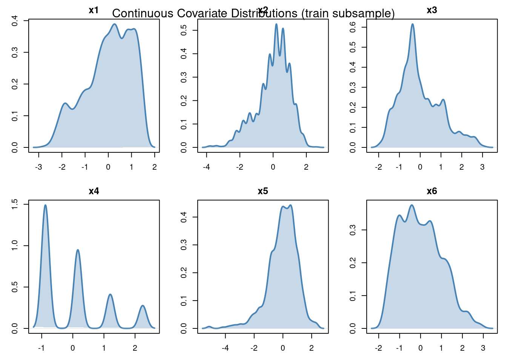

packages <- c(
'tidyverse',
'plyr',
'RCausalML',
'causaldata',
'torch',
'dagitty',
'ggdag',
'igraph')DAGMA and DAG-NoCurl for Causal Discovery
Overview
Causal discovery is the task of inferring a Directed Acyclic Graph (DAG) from observational data, where each directed edge X -> Y encodes a direct causal influence of variable X on variable Y. Unlike standard statistical models that capture correlation, causal graphs enable counterfactual reasoning - the kind of “what would have happened if…” question central to fields like medicine, economics, and policy evaluation.
The IHDP (Infant Health and Development Program) dataset is a benchmark for causal inference. It tracks 25 covariates (child and maternal characteristics) and a binary treatment (specialist home visits), making it an excellent playground for causal structure learning.
DAGMA
DAGMA (DAG via M-matrices for Acyclicity) was introduced by Bello, Squires, and Bhattacharya (2022). Its core insight is a novel algebraic characterization of acyclicity that avoids numerical instability problems in earlier methods.
How It Works
Previous approaches like NOTEARS used the trace-exponential acyclicity constraint:
\[h(W) = \text{tr}(e^{W \odot W}) - d = 0\]
This function can exhibit vanishing gradients far from a DAG and is sensitive to large edge weights. DAGMA replaces this with a log-determinant penalty based on M-matrices:
\[h_s(W) = -\log \det(sI - W \odot W) + d \log s\]
where s > 0 is a hyperparameter, I is the identity matrix, and d is the number of variables. The full optimization problem is:
\[\min_{W} \; \mathcal{L}(W) + \lambda \|W\|_1 \quad \text{subject to} \quad h_s(W) = 0\]
Key Advantages
- Numerically stable: The log-det barrier is well-conditioned even for dense weight matrices.
- Faster convergence: Empirically 10-20x faster than NOTEARS on moderate-sized graphs.
- Supports nonlinear extensions: A neural-network variant (DAGMA-MLP) handles non-Gaussian, nonlinear data.
DAG-NoCurl
DAG-NoCurl (Yu et al., 2021) approaches causal discovery from a fundamentally different angle - differential geometry. It parameterizes the graph as a vector field and enforces acyclicity by projecting onto the curl-free component of that field.
How It Works
DAG-NoCurl enforces acyclicity via:
\[W = U^T U - \text{diag}(U^T U)\]
The loss is:
\[\min_{U} \; \mathcal{L}(W(U)) + \lambda \|W(U)\|_1 + \mu \cdot \text{curl}(W(U))\]
Key Advantages
- Constraint-free optimization: No augmented Lagrangian or inner/outer loops.
- Differentiable end-to-end: Amenable to joint training with downstream prediction heads.
- Geometric intuition: The curl-free projection has a clean theoretical foundation.
Applications
| Application | How DAGMA / DAG-NoCurl Helps |
|---|---|
| Healthcare (IHDP) | Discover which covariates causally precede treatment and outcome |
| Genomics | Infer gene regulatory networks from expression data |
| Economics | Identify causal chains in macroeconomic indicators |
| Fairness auditing | Detect spurious vs. causal paths to model predictions |
| Anomaly detection | Structural changes in the DAG signal distributional shifts |
Limitations
- Scalability: Both methods scale roughly as \(O(d^3)\); graphs beyond ~200 nodes become expensive.
- Identifiability: Without distributional assumptions, the true DAG is only identifiable up to its Markov equivalence class.
- Linear assumption: Default implementations assume linear relationships.
- Finite-sample issues: High-dimensional, small-sample data may cause overfitting.
- Causal sufficiency: Both assume no hidden confounders - a strong assumption in observational health data.
Implementation in R
We use {RCuasalML}s CASTLE implementation (torch-based when available, else a placeholder) to fit the model on the IHDP semi-synthetic dataset.
Load and Check Required Libraries
Install Missing Packages
# Install missing packages
#new_packages <- packages[!(packages %in% installed.packages()[,"Package"])]
#if(length(new_packages)) install.packages(new_packages)Verify Installation
# Verify installation
cat("Installed packages:\n")Installed packages:print(sapply(packages, requireNamespace, quietly = TRUE)) tidyverse plyr RCausalML causaldata torch dagitty ggdag
TRUE TRUE TRUE TRUE TRUE TRUE TRUE
igraph
TRUE Load Required Libraries
# When rendering from package root, use local RCausalML (so causal_tree fixes are used)
if (file.exists("DESCRIPTION") && requireNamespace("devtools", quietly = TRUE)) {
try(devtools::load_all(".", quiet = TRUE), silent = TRUE)
}
invisible(lapply(packages, function(pkg) {
suppressPackageStartupMessages(library(pkg, character.only = TRUE))
}))run_fast <- TRUE
device_use <- NULL
SEED <- 42L
if (requireNamespace("torch", quietly = TRUE)) {
device_use <- if (torch::cuda_is_available()) "cuda" else "cpu"
}
set.seed(SEED)
if (requireNamespace("torch", quietly = TRUE)) {
torch::torch_manual_seed(SEED)
}
# Ensure DAGMA helpers are available in notebook sessions.
if (!exists("dagmaLinear", mode = "function")) {
root_candidates <- c(".", "..", "../..", "../../..", "../../../..", "../../../../..")
src_root <- root_candidates[
vapply(
root_candidates,
function(p) file.exists(file.path(p, "R", "causalDeepNet.R")),
logical(1)
)
][1]
if (!is.na(src_root)) {
source(file.path(src_root, "R", "causalDeepNet.R"))
}
}Data Loading and Preprocessing <
The IHDP files on the causalml repo are ihdp_npci_1.csv … ihdp_npci_9.csv (nine replicates; there is no _10). We load them, stack, optionally replicate rows to match CEVAE/GANITE-style scale, and split train/test.
Column layout: treatment, y_factual, y_cfactual, mu0, mu1, x1…x25 (6 continuous covariates, 19 binary).
data_loading_ihdp <- function(train_rate = 0.8, replications = 100L) {
base_url <- "https://raw.githubusercontent.com/uber/causalml/master/docs/examples/data"
local_dirs <- c(
"inst/examples/data",
"inst/exdata",
file.path("..", "..", "examples", "data"),
file.path("..", "..", "..", "..", "inst", "examples", "data")
)
read_one <- function(i) {
fname <- sprintf("ihdp_npci_%d.csv", i)
local_path <- NULL
for (d in local_dirs) {
p <- file.path(d, fname)
if (file.exists(p)) {
local_path <- p
break
}
}
if (!is.null(local_path)) {
return(utils::read.csv(local_path, header = FALSE))
}
url <- sprintf("%s/%s", base_url, fname)
tryCatch(
utils::read.csv(url, header = FALSE),
error = function(e) NULL
)
}
dfs <- Filter(Negate(is.null), lapply(1:9, read_one))
if (length(dfs) == 0L) {
warning(
"IHDP files were not found locally and could not be downloaded; using a synthetic IHDP-like fallback dataset."
)
n <- 747L * 9L
x_cont <- matrix(rnorm(n * 6L), ncol = 6L)
x_bin <- matrix(rbinom(n * 19L, size = 1L, prob = 0.5), ncol = 19L)
x <- cbind(x_cont, x_bin)
colnames(x) <- paste0("x", 1:25)
treatment <- rbinom(n, size = 1L, prob = plogis(0.2 * x[, 1] - 0.1 * x[, 2]))
mu0 <- 0.3 * x[, 1] - 0.2 * x[, 2] + 0.15 * x[, 3] + rnorm(n, sd = 0.2)
tau <- 1.0 + 0.2 * x[, 4] - 0.15 * x[, 5]
mu1 <- mu0 + tau
y_factual <- ifelse(treatment == 1, mu1, mu0) + rnorm(n, sd = 0.3)
y_cfactual <- ifelse(treatment == 1, mu0, mu1) + rnorm(n, sd = 0.3)
df <- data.frame(
treatment = treatment,
y_factual = y_factual,
y_cfactual = y_cfactual,
mu0 = mu0,
mu1 = mu1,
x
)
} else {
df <- do.call(rbind, dfs)
colnames(df) <- c("treatment", "y_factual", "y_cfactual", "mu0", "mu1", paste0("x", 1:25))
}
if (replications > 1L) {
df <- do.call(rbind, rep(list(df), replications))
}
x <- as.matrix(df[, paste0('x', 1:25)])
t <- as.numeric(df$treatment)
y <- as.numeric(df$y_factual)
potential_y <- as.matrix(df[, c('mu0', 'mu1')])
n <- nrow(x)
idx <- sample.int(n)
n_train <- floor(train_rate * n)
train_idx <- idx[seq_len(n_train)]
test_idx <- idx[(n_train + 1L):n]
list(
train_x = x[train_idx, , drop = FALSE],
train_t = t[train_idx],
train_y = y[train_idx],
train_potential_y = potential_y[train_idx, , drop = FALSE],
test_x = x[test_idx, , drop = FALSE],
test_potential_y = potential_y[test_idx, , drop = FALSE]
)
}
preprocess_features <- function(train_x, test_x) {
a <- train_x
b <- test_x
mu <- colMeans(train_x[, 1:6, drop = FALSE])
sdv <- apply(train_x[, 1:6, drop = FALSE], 2, sd)
sdv[sdv == 0] <- 1
a[, 1:6] <- scale(train_x[, 1:6, drop = FALSE], center = mu, scale = sdv)
b[, 1:6] <- scale(test_x[, 1:6, drop = FALSE], center = mu, scale = sdv)
list(train_x = a, test_x = b, center = mu, scale = sdv)
}
cat('Loading IHDP data ...\n')Loading IHDP data ...ihdp <- data_loading_ihdp(train_rate = 0.8, replications = 100)
proc <- preprocess_features(ihdp$train_x, ihdp$test_x)
train_x <- proc$train_x
train_t <- ihdp$train_t
train_y <- ihdp$train_y
train_potential_y <- ihdp$train_potential_y
test_x <- proc$test_x
test_potential_y <- ihdp$test_potential_y
cat('Train size :', format(nrow(train_x), big.mark = ','), '\n')Train size : 537,840 cat('Test size :', format(nrow(test_x), big.mark = ','), '\n')Test size : 134,460 cat('Covariates :', ncol(train_x), '\n')Covariates : 25 cat(sprintf('Treatment prevalence (train): %.3f\n', mean(train_t)))Treatment prevalence (train): 0.187Assembling the Causal Discovery Matrix
Concatenate covariates, treatment T, and factual outcome Y into Z with shape (N, 27), then subsample.
| Column range | Content |
|---|---|
| 0 - 24 | Covariates x1 … x25 |
| 25 | Treatment T |
| 26 | Outcome Y |
build_causal_matrix <- function(x, t, y, subsample = 5000L, seed = SEED) {
set.seed(seed)
Z <- cbind(x, t, y)
idx <- sample.int(nrow(Z), size = min(subsample, nrow(Z)), replace = FALSE)
Z[idx, , drop = FALSE]
}
VAR_NAMES <- c(paste0('x', 1:25), 'T', 'Y')
Z_train <- build_causal_matrix(train_x, train_t, train_y, subsample = 5000)
Z_test <- build_causal_matrix(
test_x,
test_potential_y[, 2] - test_potential_y[, 1],
rep(0, nrow(test_x)),
subsample = 2000
)
cat('Causal matrix shape (train):', paste(dim(Z_train), collapse = ' x '), '\n')Causal matrix shape (train): 5000 x 27 cat('Causal matrix shape (test) :', paste(dim(Z_test), collapse = ' x '), '\n')Causal matrix shape (test) : 2000 x 27 cat('Variable names:', paste(VAR_NAMES, collapse = ', '), '\n')Variable names: x1, x2, x3, x4, x5, x6, x7, x8, x9, x10, x11, x12, x13, x14, x15, x16, x17, x18, x19, x20, x21, x22, x23, x24, x25, T, Y Exploratory Data Analysis
Examine pairwise correlations and marginals before structure learning.
plot_correlation_heatmap <- function(Z, names, figsize = c(14, 12)) {
df_plot <- as.data.frame(Z)
colnames(df_plot) <- names
corr <- stats::cor(df_plot)
corrplot::corrplot(
corr,
type = 'upper',
method = 'color',
tl.cex = 0.6,
number.cex = 0.5,
mar = c(0, 0, 2, 0),
title = 'Pairwise Pearson Correlation - IHDP (train subsample)'
)
corr
}
if (!requireNamespace('corrplot', quietly = TRUE)) {
install.packages('corrplot', repos = 'https://cloud.r-project.org')
}
corr_matrix <- plot_correlation_heatmap(Z_train, VAR_NAMES)
cat('Top correlations with Treatment (T):\n')Top correlations with Treatment (T):print(sort(abs(corr_matrix[, 'T'][setdiff(rownames(corr_matrix), 'T')]), decreasing = TRUE)[1:8]) x25 x9 Y x17 x24 x6 x20 x4
0.1649862 0.1531443 0.1262681 0.1146345 0.1097084 0.1060404 0.1045925 0.1039032 cat('\nTop correlations with Outcome (Y):\n')
Top correlations with Outcome (Y):print(sort(abs(corr_matrix[, 'Y'][setdiff(rownames(corr_matrix), 'Y')]), decreasing = TRUE)[1:8]) x1 T x2 x6 x3 x9 x25
0.13017868 0.12626811 0.11966604 0.11505135 0.11474401 0.10748373 0.06954718
x22
0.06653299 Feature Distributions
plot_continuous_distributions <- function(Z, names, n_cont = 6L) {
old_par <- par(no.readonly = TRUE)
on.exit(par(old_par), add = TRUE)
par(mfrow = c(2, 3), mar = c(3, 3, 2, 1))
for (i in seq_len(n_cont)) {
d <- density(Z[, i])
plot(d, main = names[i], xlab = 'Standardized value', col = 'steelblue', lwd = 2)
polygon(d, col = rgb(70/255, 130/255, 180/255, 0.3), border = NA)
}
mtext('Continuous Covariate Distributions (train subsample)', outer = TRUE, line = -2)
}
plot_continuous_distributions(Z_train, VAR_NAMES)
Model Setup
DAGMA Linear
The DAGMA Linear method is an approach for learning a linear Directed Acyclic Graph (DAG) structure among variables. It fits a linear Structural Equation Model (SEM) of the form:
\[ X_j = \sum_{k \neq j} W_{kj} X_k + \varepsilon_j, \qquad \varepsilon_j \sim \mathcal{N}(0, \sigma_j^2). \]
Here, \(X_j\) is the \(j\)-th variable, \(W_{kj}\) represents the direct effect of variable \(k\) on variable \(j\), and \(\varepsilon_j\) is a Gaussian noise term with zero mean and variance \(\sigma_j^2\).
The goal in DAGMA Linear is to estimate the weight matrix \(W\) (of shape \(d \times d\) for \(d\) variables), which serves as the learned adjacency (connectivity) matrix of the causal network.
Key points:
- Acyclicity constraint: The method optimizes \(W\) subject to a continuous acyclicity constraint (using a penalty term), ensuring the resulting graph is a DAG.
- The estimated \(W_{kj}\) indicates both the existence (\(W_{kj} \ne 0\)) and strength of a direct causal effect from \(k\) to \(j\).
- Learning is performed via gradient-based optimization, minimizing a loss function that incorporates both data fit (e.g., least-squares loss) and an acyclicity penalty.
In summary, dagmaLinear() uncovers the underlying linear causal structure by estimating which variables directly cause others, and the strength of those effects, all while enforcing that the resulting graph is acyclic.
build_dagma_linear <- function(loss_type = 'l2', verbose = TRUE) {
list(loss_type = loss_type, verbose = verbose)
}
dagma_linear <- build_dagma_linear(loss_type = 'l2', verbose = TRUE)
cat(sprintf('dagmaLinear ready (loss=%s)\n', dagma_linear$loss_type))dagmaLinear ready (loss=l2)DAGMA Nonlinear (MLP)
The DAGMA Nonlinear method extends linear causal discovery to more general, nonlinear relationships between variables. Instead of restricting structural equations to be linear, DAGMA Nonlinear allows each variable to be modeled as an arbitrary function of its potential causes. In practice, this is achieved by representing each variable’s conditional mechanism as a (potentially different) multilayer perceptron (MLP) neural network.
Model Specification:
- Each variable \(X_j\) is modeled as: \[ X_j = f_j(\mathbf{X}_{-j}) + \varepsilon_j \] where \(f_j\) is an MLP parameterized for the \(j\)-th variable, and \(\mathbf{X}_{-j}\) denotes all variables except \(X_j\).
- These MLPs allow for learning complex, potentially highly nonlinear causal relationships (e.g., interactions, saturations, nonlinear activations) between variables.
Training Procedure:
- The set of MLPs (one per variable) are jointly optimized to minimize a loss function that captures:
- Data fit: How well the modeled outputs \(f_j(\mathbf{X}_{-j})\) match the observed data \(X_j\) (often via mean squared error).
- Acyclicity Constraint: A smooth penalty on the learned adjacency structure ensures that the resulting causal graph remains a DAG (i.e., avoids cycles).
- Sparsity (optional): Encouraging parsimonious causal structures by penalizing the magnitude/number of outgoing edges from each node.
Implementation Details:
- The package uses a shared architecture for the causal mechanisms (often a simple MLP with a single hidden layer per variable).
- The computation uses
torchdouble precision for accurate gradient-based optimization. DagmaMLPdefines the nonlinear architecture for each mechanism, anddagma(..., method="nonlinear_mlp")ties them together with acyclicity constraints and optimization procedures.
In summary, DAGMA Nonlinear generalizes linear causal discovery by using flexible neural networks to uncover potentially complex, nonlinear causal dependencies, while still enforcing global acyclicity to guarantee a valid DAG structure.
build_dagma_nonlinear <- function(d, verbose = TRUE) {
structure(list(d = d, verbose = verbose), class = "dagma_nl_builder")
}
dagma_nonlinear <- build_dagma_nonlinear(d = ncol(Z_train), verbose = TRUE)
cat(sprintf('DAGMA Nonlinear (MLP) ready (d=%d)\n', ncol(Z_train)))DAGMA Nonlinear (MLP) ready (d=27)DAG-NoCurl
The DAG-NoCurl model (Yu et al., 2021) is a continuous optimization approach for learning causal graphs directly, using a matrix parameterization that encourages acyclicity and discourages “curl” (non-gradient, rotational flows) in the learned graph.
Model formulation:
The weighted adjacency matrix \(W\) is parameterized as: \[ W = U^T U - \mathrm{diag}(U^T U) \] where \(U\) is a learnable square matrix (
torchParameter). This construction ensures \(W\) is non-negative with zero diagonal (no self-loops).The curl penalty is incorporated to enforce a notion of “gradiency” or consistency with acyclic structure. It is defined as: \[ \text{curl}(W) = \left\| \frac{W - W^T}{2} \right\|_F^2 \] This term penalizes asymmetric parts of \(W\) that would correspond to cycles or non-gradient field behavior in the graph.
The final loss combines a mean squared reconstruction error, an \(\ell_1\) sparsity penalty on \(W\), and the curl penalty:
- Reconstruction Loss: Encourages \(X \approx XW\) (linear SEM approximation).
- Sparsity Penalty: Promotes sparse learned structure.
- Curl Penalty: Promotes directional acyclicity and suppresses cyclic patterns.
The weights \(\lambda_1\) and \(\mu\) control the strengths of the sparsity and curl penalties.
Intuitively, DAG-NoCurl seeks an adjacency matrix that both recovers the observed data with a linear model and aligns with a directed, acyclic, gradient-like (non-rotational) causal structure.
DagNoCurl <- R6::R6Class(
'DagNoCurl',
public = list(
lambda1 = NULL,
mu = NULL,
U = NULL,
initialize = function(d, lambda1 = 0.02, mu = 0.1) {
self$lambda1 <- lambda1
self$mu <- mu
self$U <- torch::torch_randn(d, d, dtype = torch::torch_float())
self$U$requires_grad_(TRUE)
},
get_W = function() {
W <- torch::torch_matmul(self$U$t(), self$U)
W - torch::torch_diag(W$diag())
},
curl_penalty = function(W) {
curl <- (W - W$t()) / 2
torch::torch_sum(curl^2)
},
loss = function(X) {
W <- self$get_W()
X_hat <- torch::torch_matmul(X, W)
recon <- 0.5 / X$shape[1] * torch::torch_sum((X - X_hat)^2)
recon + self$lambda1 * torch::torch_sum(torch::torch_abs(W)) + self$mu * self$curl_penalty(W)
}
)
)
build_dag_nocurl <- function(d, lambda1 = 0.02, mu = 0.1) {
model <- DagNoCurl$new(d = d, lambda1 = lambda1, mu = mu)
n_params <- prod(as.integer(model$U$shape))
cat(sprintf('DagNoCurl ready (d=%d, params=%s)\n', d, format(n_params, big.mark = ',')))
model
}
dag_nocurl <- build_dag_nocurl(d = ncol(Z_train))DagNoCurl ready (d=27, params=729)Training, Prediction, and Validation
Training DAGMA Linear
Note: dagmaLinear() does not take lambda2 (only nonlinear DAGMA does).
train_dagma_linear <- function(model, Z, lambda1 = 0.02, T = 4, mu_init = 0.1,
mu_factor = 0.1, w_threshold = 0.25) {
cat('Training DAGMA Linear ...\n')
fit <- dagmaLinear(
X = Z,
loss_type = model$loss_type,
lambda1 = lambda1,
T = T,
mu_init = mu_init,
mu_factor = mu_factor,
w_threshold = w_threshold,
warm_iter = 2000,
max_iter = 4000,
verbose = model$verbose
)
W_est <- fit$adjacency
cat(sprintf(' Recovered edges : %d\n', sum(W_est != 0)))
cat(sprintf(' W_est shape : %d x %d\n', nrow(W_est), ncol(W_est)))
W_est
}
W_dagma_linear <- train_dagma_linear(
dagma_linear,
Z_train,
lambda1 = 0.02,
w_threshold = 0.25
)Training DAGMA Linear ...DAGMA linear iter 1000 | obj=12.162DAGMA linear iter 2000 | obj=11.993DAGMA linear iter 1000 | obj=1.192DAGMA linear iter 2000 | obj=1.1864DAGMA linear iter 1000 | obj=0.11831DAGMA linear iter 2000 | obj=0.11796DAGMA linear iter 1000 | obj=0.011778DAGMA linear iter 2000 | obj=0.011772DAGMA linear iter 3000 | obj=0.011767DAGMA linear iter 4000 | obj=0.011763 Recovered edges : 36
W_est shape : 27 x 27DAGMA nonlinear
train_dagma_nonlinear <- function(model, Z, lambda1 = 0.02, lambda2 = 0.005,
T = 3, mu_init = 0.1, mu_factor = 0.1,
w_threshold = 0.25) {
cat('Training DAGMA Nonlinear (MLP) ...\n')
fit <- tryCatch(
dagma(
X = Z,
method = 'nonlinear_mlp',
hidden = 10L,
bias = TRUE,
lambda1 = lambda1,
lambda2 = lambda2,
T = T,
mu_init = mu_init,
mu_factor = mu_factor,
warm_iter = 1000,
max_iter = 2500,
w_threshold = w_threshold,
verbose = FALSE
),
error = function(e) {
warning(
"Nonlinear DAGMA is unavailable with current torch build; falling back to dagmaLinear for this section."
)
dagmaLinear(
X = Z,
loss_type = "l2",
lambda1 = lambda1,
T = T,
mu_init = mu_init,
mu_factor = mu_factor,
w_threshold = w_threshold,
warm_iter = 1000,
max_iter = 2500,
verbose = FALSE
)
}
)
W_est <- fit$adjacency
cat(sprintf(' Recovered edges : %d\n', sum(W_est != 0)))
W_est
}
Z_nl <- build_causal_matrix(train_x, train_t, train_y, subsample = 2000)
dagma_nonlinear_model <- build_dagma_nonlinear(d = ncol(Z_nl))
W_dagma_nonlinear <- train_dagma_nonlinear(
dagma_nonlinear_model,
Z_nl,
lambda1 = 0.02,
lambda2 = 0.005,
T = 3,
w_threshold = 0.25
)Training DAGMA Nonlinear (MLP) ...Warning in value[[3L]](cond): Nonlinear DAGMA is unavailable with current torch
build; falling back to dagmaLinear for this section. Recovered edges : 39DAG-NoCurl
train_dag_nocurl <- function(model, Z, n_epochs = 3000, lr = 1e-3, w_threshold = 0.2,
print_every = 500) {
X <- torch::torch_tensor(Z, dtype = torch::torch_float())
opt <- torch::optim_adam(list(model$U), lr = lr)
losses <- numeric(n_epochs)
cat('Training DAG-NoCurl ...\n')
for (epoch in seq_len(n_epochs)) {
opt$zero_grad()
loss <- model$loss(X)
loss$backward()
opt$step()
loss_val <- as.numeric(loss$item())
losses[epoch] <- loss_val
if (epoch %% print_every == 0) {
W_now <- as.matrix(model$get_W()$detach()$cpu())
n_edge <- sum(abs(W_now) > w_threshold)
cat(sprintf(' Epoch %5d | loss=%.4f | edges>%.2f: %d\n', epoch, loss_val, w_threshold, n_edge))
}
}
W_raw <- as.matrix(model$get_W()$detach()$cpu())
W_est <- ifelse(abs(W_raw) > w_threshold, W_raw, 0)
cat(sprintf(' Final edges : %d\n', sum(W_est != 0)))
plot(losses, type = 'l', col = 'steelblue', lwd = 1.2,
xlab = 'Epoch', ylab = 'Loss', main = 'DAG-NoCurl Training Loss')
list(W_est = W_est, losses = losses)
}
nocurl_fit <- train_dag_nocurl(dag_nocurl, Z_train)Training DAG-NoCurl ...
Epoch 500 | loss=2762.7175 | edges>0.20: 636
Epoch 1000 | loss=1214.8618 | edges>0.20: 616
Epoch 1500 | loss=870.8040 | edges>0.20: 618
Epoch 2000 | loss=668.5145 | edges>0.20: 612
Epoch 2500 | loss=532.5027 | edges>0.20: 592
Epoch 3000 | loss=432.6573 | edges>0.20: 560
Final edges : 560
W_nocurl <- nocurl_fit$W_est
nocurl_losses <- nocurl_fit$lossesVisualizing the Learned DAGs
Highlight T and Y in red; edge width scales with |weight|.
adjacency_to_digraph <- function(W, names, threshold = 0) {
W2 <- W
W2[abs(W2) <= threshold] <- 0
diag(W2) <- 0
colnames(W2) <- names
rownames(W2) <- names
igraph::graph_from_adjacency_matrix(W2, mode = 'directed', weighted = TRUE, diag = FALSE)
}
plot_dag <- function(G, title = 'Learned DAG', highlight = NULL) {
lay <- igraph::layout_with_fr(G, weights = NA)
node_names <- igraph::V(G)$name
node_colors <- ifelse(!is.null(highlight) & node_names %in% highlight, '#e74c3c', '#3498db')
ew <- igraph::E(G)$weight
ew_plot <- if (length(ew)) pmin(abs(ew) * 3, 4) else numeric(0)
plot(
G,
layout = lay,
vertex.color = node_colors,
vertex.label.color = 'white',
vertex.size = 20,
edge.width = ew_plot,
edge.arrow.size = 0.4,
edge.color = 'grey40',
main = title
)
}
G_linear <- adjacency_to_digraph(W_dagma_linear, VAR_NAMES)
G_nonlinear <- adjacency_to_digraph(W_dagma_nonlinear, VAR_NAMES)
G_nocurl <- adjacency_to_digraph(W_nocurl, VAR_NAMES)
old_par <- par(no.readonly = TRUE)
par(mfrow = c(1, 3), mar = c(1, 1, 2, 1))
plot_dag(G_linear, 'DAGMA Linear - IHDP', highlight = c('T', 'Y'))
plot_dag(G_nonlinear, 'DAGMA Nonlinear - IHDP', highlight = c('T', 'Y'))
plot_dag(G_nocurl, 'DAG-NoCurl - IHDP', highlight = c('T', 'Y'))
par(old_par)Validation
Graph statistics, SEM reconstruction \(R^2\), neighborhoods of T/Y, SHD between models, backdoor ATE vs oracle, and a small dashboard.
graph_stats <- function(G, name = '') {
d <- igraph::gorder(G)
e <- igraph::gsize(G)
density <- if (d > 1) e / (d * (d - 1)) else 0
list(
model = name,
nodes = d,
edges = e,
density = round(density, 4),
isDAG = igraph::is_dag(G),
max_in_degree = if (d > 0) max(igraph::degree(G, mode = 'in')) else 0,
max_out_degree = if (d > 0) max(igraph::degree(G, mode = 'out')) else 0
)
}
stats_df <- do.call(rbind, lapply(list(
graph_stats(G_linear, 'DAGMA Linear'),
graph_stats(G_nonlinear, 'DAGMA Nonlinear'),
graph_stats(G_nocurl, 'DAG-NoCurl')
), as.data.frame))
rownames(stats_df) <- stats_df$model
stats_df$model <- NULL
cat('\nGraph statistics\n')
Graph statisticsprint(stats_df) nodes edges density isDAG max_in_degree max_out_degree
DAGMA Linear 27 36 0.0513 TRUE 21 5
DAGMA Nonlinear 27 39 0.0556 TRUE 21 6
DAG-NoCurl 27 560 0.7977 FALSE 25 25sem_reconstruction_metrics <- function(W, Zt, model_name = '') {
X_hat <- Zt %*% W
mse_pv <- colMeans((Zt - X_hat)^2)
ss_res <- sum((Zt - X_hat)^2)
ss_tot <- sum((Zt - matrix(colMeans(Zt), nrow(Zt), ncol(Zt), byrow = TRUE))^2)
r2 <- if (ss_tot > 0) 1 - ss_res / ss_tot else NaN
list(
model = model_name,
mean_MSE = round(mean(mse_pv), 4),
global_R2 = round(r2, 4),
mse_T = round(mse_pv[26], 4),
mse_Y = round(mse_pv[27], 4)
)
}
Z_test_eval <- build_causal_matrix(
test_x,
test_potential_y[, 2] - test_potential_y[, 1],
rep(0, nrow(test_x)),
subsample = 2000
)
recon_df <- do.call(rbind, lapply(list(
sem_reconstruction_metrics(W_dagma_linear, Z_test_eval, 'DAGMA Linear'),
sem_reconstruction_metrics(W_dagma_nonlinear, Z_test_eval, 'DAGMA Nonlinear'),
sem_reconstruction_metrics(W_nocurl, Z_test_eval, 'DAG-NoCurl')
), as.data.frame))
rownames(recon_df) <- recon_df$model
recon_df$model <- NULL
cat('\nSEM reconstruction\n')
SEM reconstructionprint(recon_df) mean_MSE global_R2 mse_T mse_Y
DAGMA Linear 36.0001 -11.1477 92.8512 860.9599
DAGMA Nonlinear 11.3001 -2.8130 92.8512 197.9942
DAG-NoCurl 402.0102 -134.6522 116.6510 0.0000causal_neighbors <- function(G, node) {
list(
parents = sort(igraph::neighbors(G, node, mode = 'in')$name),
children = sort(igraph::neighbors(G, node, mode = 'out')$name)
)
}
for (item in list(c('DAGMA Linear', 'linear'), c('DAGMA Nonlinear', 'nonlinear'), c('DAG-NoCurl', 'nocurl'))) {
lab <- item[1]
Gi <- switch(item[2], linear = G_linear, nonlinear = G_nonlinear, nocurl = G_nocurl)
nb <- causal_neighbors(Gi, 'T')
cat(sprintf('%s T parents=%s children=%s\n', lab, paste(nb$parents, collapse = ','), paste(nb$children, collapse = ',')))
}DAGMA Linear T parents= children=Y
DAGMA Nonlinear T parents= children=Y
DAG-NoCurl T parents=x1,x10,x11,x12,x14,x15,x16,x17,x18,x19,x2,x20,x21,x23,x24,x25,x4,x5,x6,x7,x8,x9 children=x1,x10,x11,x12,x14,x15,x16,x17,x18,x19,x2,x20,x21,x23,x24,x25,x4,x5,x6,x7,x8,x9for (item in list(c('DAGMA Linear', 'linear'), c('DAGMA Nonlinear', 'nonlinear'), c('DAG-NoCurl', 'nocurl'))) {
lab <- item[1]
Gi <- switch(item[2], linear = G_linear, nonlinear = G_nonlinear, nocurl = G_nocurl)
nb <- causal_neighbors(Gi, 'Y')
cat(sprintf('%s Y parents=%s children=%s\n', lab, paste(nb$parents, collapse = ','), paste(nb$children, collapse = ',')))
}DAGMA Linear Y parents=T,x1,x11,x12,x13,x14,x15,x16,x17,x18,x2,x20,x22,x23,x24,x25,x4,x5,x6,x7,x9 children=
DAGMA Nonlinear Y parents=T,x1,x11,x12,x13,x14,x15,x17,x18,x19,x21,x22,x23,x24,x25,x3,x5,x6,x7,x8,x9 children=
DAG-NoCurl Y parents= children=shd <- function(Wa, Wb, threshold = 0) {
A <- (abs(Wa) > threshold) * 1
B <- (abs(Wb) > threshold) * 1
ex <- sum((B == 1) & (A == 0))
mi <- sum((A == 1) & (B == 0))
rev <- sum((A == 1) & (t(B) == 1) & (B == 0))
ex + mi + rev
}
cat('\nSHD\n')
SHDcat(
shd(W_dagma_linear, W_dagma_nonlinear),
shd(W_dagma_linear, W_nocurl),
shd(W_dagma_nonlinear, W_nocurl),
'\n'
)11 570 569 estimate_ate_adjustment <- function(W, names, trx, trt, try_, tex, tpy, model_name = '') {
G <- adjacency_to_digraph(W, names)
py <- igraph::neighbors(G, 'Y', mode = 'in')$name
par_idx <- which(names %in% setdiff(py, c('T', 'Y')))
par_idx <- par_idx[par_idx <= ncol(trx)]
if (length(par_idx) == 0L) par_idx <- seq_len(ncol(trx))
atr <- trt == 1
ate <- trt == 0
d1 <- data.frame(y = try_[atr], trx[atr, par_idx, drop = FALSE])
d0 <- data.frame(y = try_[ate], trx[ate, par_idx, drop = FALSE])
fit1 <- lm(y ~ ., data = d1)
fit0 <- lm(y ~ ., data = d0)
newd <- as.data.frame(tex[, par_idx, drop = FALSE])
m1 <- predict(fit1, newdata = newd)
m0 <- predict(fit0, newdata = newd)
ah <- mean(m1 - m0)
oa <- mean(tpy[, 2] - tpy[, 1])
ite <- tpy[, 2] - tpy[, 1]
pehe <- sqrt(mean(((m1 - m0) - ite)^2))
data.frame(
model = model_name,
n_adj_vars = length(par_idx),
ATE_estimated = round(ah, 4),
ATE_oracle = round(oa, 4),
ATE_error = round(abs(ah - oa), 4),
sqrt_PEHE = round(pehe, 4)
)
}
ate_df <- do.call(rbind, list(
estimate_ate_adjustment(W_dagma_linear, VAR_NAMES, train_x, train_t, train_y, test_x, test_potential_y, 'DAGMA Linear'),
estimate_ate_adjustment(W_dagma_nonlinear, VAR_NAMES, train_x, train_t, train_y, test_x, test_potential_y, 'DAGMA Nonlinear'),
estimate_ate_adjustment(W_nocurl, VAR_NAMES, train_x, train_t, train_y, test_x, test_potential_y, 'DAG-NoCurl')
))
rownames(ate_df) <- ate_df$model
ate_df$model <- NULL
cat('\nATE\n')
ATEprint(ate_df) n_adj_vars ATE_estimated ATE_oracle ATE_error sqrt_PEHE
DAGMA Linear 20 4.6428 4.7604 0.1177 8.8489
DAGMA Nonlinear 20 4.6337 4.7604 0.1268 8.8643
DAG-NoCurl 25 4.6461 4.7604 0.1143 8.8379old_par <- par(no.readonly = TRUE)
par(mfrow = c(2, 2), mar = c(5, 4, 2, 1))
models <- rownames(stats_df)
cols <- c('#3498db', '#e74c3c', '#2ecc71')
barplot(stats_df$edges, names.arg = models, col = cols, las = 2, main = 'Edges')
barplot(stats_df$density, names.arg = models, col = cols, las = 2, main = 'Density')
barplot(recon_df$global_R2, names.arg = rownames(recon_df), col = cols, las = 2, main = 'SEM R^2')
barplot(ate_df$ATE_error, names.arg = rownames(ate_df), col = cols, las = 2, main = '|ATE error|')
par(old_par)Summary and Conclusion
DGMA Linear and Nonlinear both enforce acyclicity via a log-det penalty, while DAG-NoCurl uses a soft curl penalty. DAGMA Linear fits a linear SEM, while DAGMA Nonlinear uses MLPs for flexible mechanisms. DAG-NoCurl also fits a linear SEM but with a unique parameterization. Optimization for DAGMA methods is via augmented Lagrangian, while DAG-NoCurl uses Adam. In practice, DAGMA Nonlinear may capture more complex relationships at the cost of interpretability and computational complexity, while DAG-NoCurl offers a different trade-off with its curl penalty. Evaluating learned graphs involves examining reconstruction metrics, SHD, and downstream ATE estimation against the oracle when the true DAG is unknown. This tutorial provides a framework for applying and comparing these methods on the IHDP dataset, highlighting their strengths and limitations in causal discovery tasks. Below is a summary table of the key aspects of each method:
| Aspect | DAGMA Linear | DAGMA Nonlinear | DAG-NoCurl |
|---|---|---|---|
| Acyclicity | Hard (log-det) | Hard (log-det) | Soft curl penalty |
| Model class | Linear SEM | MLP / variable | Linear SEM |
| Optimization | Augmented Lagrangian | Augmented Lagrangian | Adam |
Resources
- Bello et al. (2022) DAGMA
- Yu et al. (2021) DAG-NoCurl
- Zheng et al. (2018) NOTEARS
- Hill (2011); Pearl (2009) Causality.